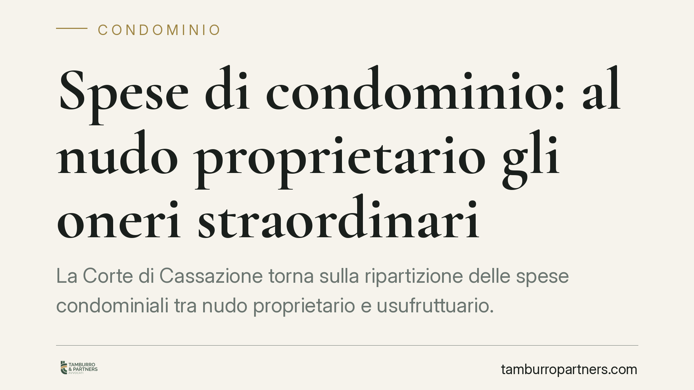

Spese di condominio: al nudo proprietario gli oneri straordinari
La Corte di Cassazione torna sulla ripartizione delle spese condominiali tra nudo proprietario e usufruttuario. La regola è netta: gli oneri straordinari gravano sul primo, quelli ordinari sul secondo. Un criterio fissato dal Codice civile che l'assemblea non può modificare. Vediamo cosa significa in concreto per chi detiene un immobile gravato da usufrutto.

Il caso
La vicenda nasce in un condominio di Agrigento. Una società a responsabilità limitata, nuda proprietaria di un'unità immobiliare, si è trovata a discutere la ripartizione delle spese deliberate dall'assemblea. La questione è passata dal Tribunale di Agrigento alla Corte d'Appello di Palermo, fino alla Corte di Cassazione.
Il nodo è sempre lo stesso: quando un immobile è gravato da usufrutto, chi paga cosa? E soprattutto, l'assemblea condominiale può stabilire una ripartizione diversa da quella prevista dalla legge?
La Suprema Corte ha ribadito un principio consolidato: i criteri di ripartizione tra nudo proprietario e usufruttuario sono fissati dal Codice civile e non possono essere alterati da una delibera assembleare.
Inquadramento normativo
La materia è regolata da due articoli del Codice civile.
L'art. 1004 c.c. pone a carico dell'usufruttuario le spese di manutenzione ordinaria: tutto ciò che serve alla custodia, all'amministrazione e alla conservazione ordinaria della cosa. È chi gode del bene a sostenerne i costi di gestione corrente.
L'art. 1005 c.c. attribuisce invece al nudo proprietario le riparazioni straordinarie. La norma le definisce come quelle «necessarie ad assicurare la stabilità dei muri maestri e delle volte, la sostituzione delle travi, il rinnovamento, per intero o per una parte notevole, dei tetti, solai, scale, acquedotti, muri di sostegno o di cinta».
Un punto merita attenzione: la distinzione tra ordinario e straordinario dipende dalla natura dell'opera, non dal suo importo. Un intervento costoso ma di gestione corrente resta ordinario; una riparazione strutturale, anche di spesa contenuta, è straordinaria. Confondere i due piani è un errore frequente.
Questi criteri hanno natura inderogabile nei rapporti con il condominio: l'assemblea non può spostare su un soggetto oneri che la legge attribuisce all'altro.
Implicazioni pratiche
La pronuncia ha ricadute concrete per chi detiene la nuda proprietà e per chi è usufruttuario.
Il nudo proprietario deve mettere in conto gli interventi strutturali sull'edificio: rifacimento del tetto, consolidamento delle facciate, sostituzione di solai, opere sulle parti comuni di natura straordinaria. Sono spese che non può ribaltare sull'usufruttuario, nemmeno se una delibera prova a farlo.
L'usufruttuario resta tenuto alle spese di gestione corrente: pulizie, piccola manutenzione, utenze dei servizi comuni, compenso dell'amministratore.
Attenzione a un equivoco diffuso. Nudo proprietario e usufruttuario possono regolare diversamente i loro rapporti interni con un accordo privato. Ma quell'accordo non vincola il condominio, che continua ad applicare i criteri legali e a rivolgersi al soggetto indicato dalla legge. L'intesa privata produce effetti solo tra le parti che l'hanno sottoscritta.
Dalla ripartizione legale discende anche la legittimazione a impugnare le delibere. Chi è chiamato a sostenere una determinata spesa ha interesse a contestare la relativa decisione assembleare. Il nudo proprietario potrà quindi impugnare le delibere su oneri straordinari a lui imputabili.
Su questo punto vale ricordare l'art. 1137 c.c.: l'impugnazione va proposta entro 30 giorni. Il termine decorre dalla data della delibera per i condomini presenti e dissenzienti, e dalla comunicazione del verbale per gli assenti. Superato quel termine, la delibera diventa inoppugnabile, salvo i casi di nullità.
Cosa fare in concreto
- Verificate la natura dell'opera prima di contestare la ripartizione. Chiedetevi se l'intervento riguarda la struttura dell'edificio (straordinario) o la sua gestione corrente (ordinario), a prescindere dall'importo.
- Controllate il verbale assembleare e la data di comunicazione. Da lì decorre il termine di 30 giorni per l'impugnazione ex art. 1137 c.c.
- Non confidate nell'accordo interno verso il condominio. L'intesa tra nudo proprietario e usufruttuario regola solo i vostri rapporti reciproci: il condominio applica comunque i criteri di legge.
- Conservate la documentazione degli interventi. Preventivi, relazioni tecniche e capitolati aiutano a dimostrare la natura ordinaria o straordinaria dell'opera.
- Agite tempestivamente. In presenza di una delibera che vi addebita spese non dovute, consigliamo di valutare l'impugnazione entro il termine, dopo un confronto con un professionista.
La regola di fondo resta semplice: il godimento comporta i costi correnti, la proprietà sopporta gli interventi strutturali. Un principio che la giurisprudenza continua a presidiare con fermezza.
---
*Contributo informativo a cura di Tamburro & Partners - Avv. Giuseppe Tamburro. Non costituisce parere legale.*
Ogni condominio ha una storia a sé.
Se gestisci un'amministrazione e vuoi un confronto su una specifica questione condominiale, scrivi allo studio. Ti rispondiamo entro un giorno lavorativo.